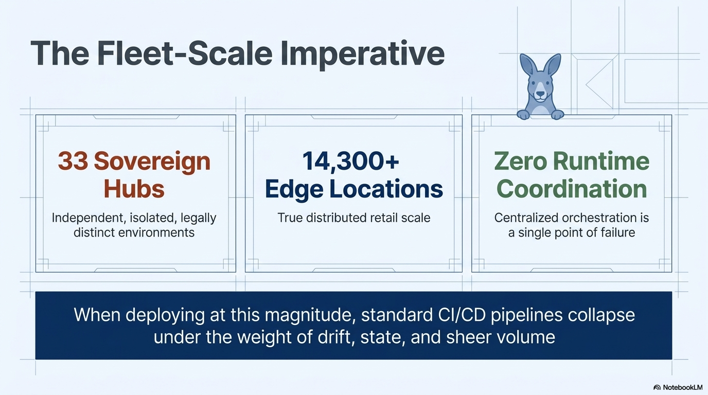
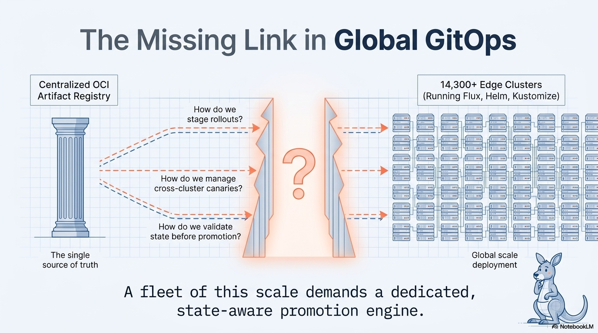
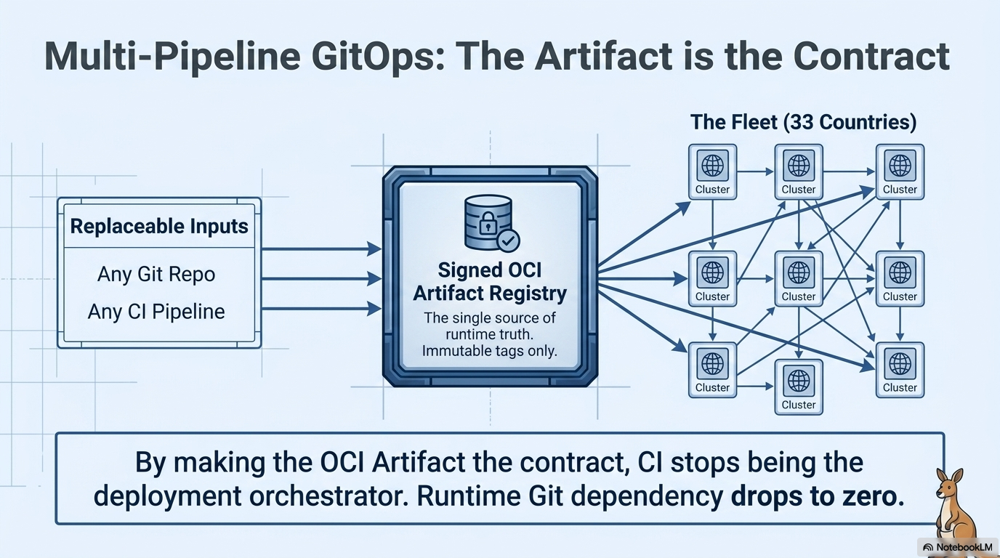
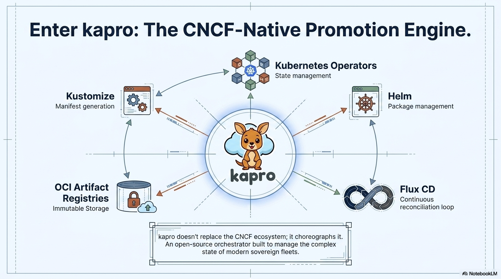
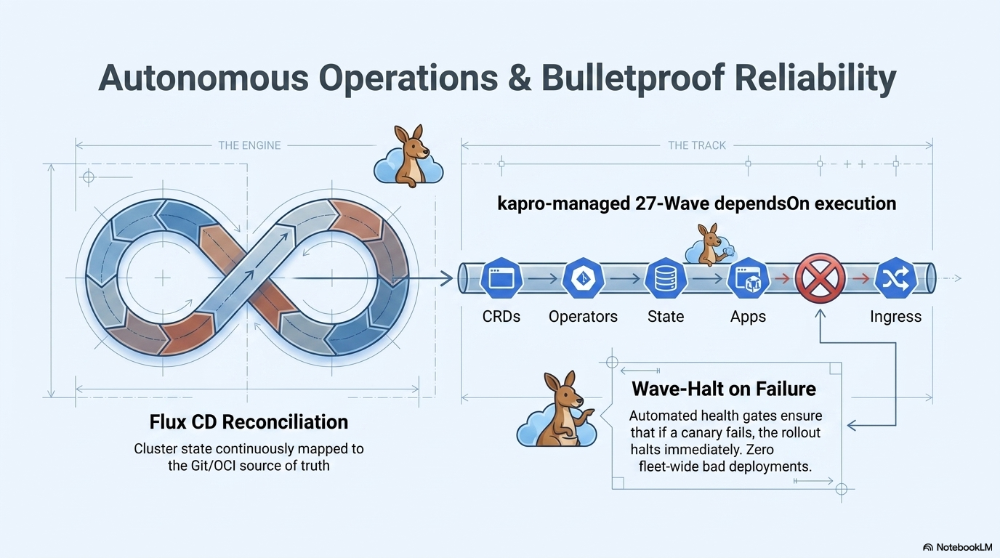

The Fleet-Scale Imperative
Sovereign hubs. Edge locations at true distributed scale. Zero tolerance for centralized runtime coordination, because centralized orchestration is a single point of failure. When deploying at this magnitude, standard CI/CD pipelines collapse under the weight of drift, state, and sheer volume.

Why Sequential Pipelines Break
Traditional CI/CD assumes a linear world: build, test, deploy. But Kafka must run before 14 dependent services, operators must precede custom resources, and databases require lifecycle management, backups, and drift correction. Every cluster must continuously self-verify against its source of truth. Sequential pipelines simply cannot express this.

The Missing Link in Global GitOps
You have a centralized OCI artifact registry. You have edge clusters running Flux, Helm, and Kustomize. But between those two ends, three questions remain unanswered: How do you stage rollouts? How do you manage cross-cluster canaries? How do you validate state before promotion?

The Artifact is the Contract
Kapro decouples CI from deployment. The OCI artifact becomes the single source of runtime truth: immutable tags only. Any git repo, any CI pipeline can produce it. By making the OCI artifact the contract, CI stops being the deployment orchestrator. Runtime git dependency drops to zero.

Enter Kapro
Kapro doesn't replace the CNCF ecosystem. It choreographs it. An open-source orchestrator built to manage the complex state of modern sovereign fleets, sitting at the center of Kubernetes Operators, Helm, Kustomize, OCI registries, and GitOps reconciliation loops.

The Mechanics of Promotion

- Intra-cluster blue/green. Seamless traffic cutover within cluster boundary. Rollbacks are instant routing flips, not redeployments.
- Inter-cluster canary. Progressive rollout with health gates across regions. Pilot clusters first, then regional waves, then the global fleet.
- No inline updates. Ever. Traffic is cutover only after verification. Standby workloads always deploy in a separate namespace.
Autonomous Operations
Kapro manages wave-based dependsOn execution across CRDs, operators, state, apps, and ingress. Automated health gates ensure that if a check or canary fails, the rollout halts. Zero fleet-wide bad deployments.

Built For
Retail
Deploy POS software to thousands of stores across 30+ countries. Pilot clusters first, then regional waves. A bad deployment halts at wave boundaries and never reaches the fleet.
Financial Services
Separate deployment flows for GDPR, SOC2, and PCI-DSS. Environment isolation per regulatory zone, audit trails via signed OCI provenance chains, mandatory approval gates.
SaaS Platforms
Progressive rollout to customer clusters. Canary tenants get new features first. Health gates block rollout if error rates spike. Auto-promotion after soak.
How Kapro Compares
| Kapro | Flux | ArgoCD | Kargo | |
|---|---|---|---|---|
| Multi-cluster promotion | Native | Manual | App-of-apps | Native |
| Progressive delivery | Built-in | Via Flagger | Via Argo Rollouts | Built-in |
| OCI-first | Yes | Partial | Git-centric | Yes |
| Sovereign fleet | Designed for it | No | No | Limited |
| Flux compatible | Built on Flux | N/A | No | Separate |
| Health gates | Pluggable | No | No | Yes |
| Approvals | CRD-based | No | External | Yes |
Kapro sits above Flux, not replacing it, and alongside Kargo as a complementary tool. Kapro focuses on horizontal wave ordering across sovereign fleets, while Kargo focuses on vertical pipeline staging across environments.
Get Started
# Bootstrap a hub cluster kapro hub init --project my-project --cluster my-hub # Add spoke clusters to the fleet kapro spoke add de-prod --provider gcp-fleet --labels tier=canary kapro spoke add fi-prod --provider gcp-fleet --labels tier=prod # Define your app and delivery pipeline kubectl apply -f kaproapp.yaml kubectl apply -f kapro.yaml # Push a version from CI kapro bundle generate --app my-app --version 1.0.0 --push # Create a release. Kapro handles the rest. kubectl apply -f release.yaml